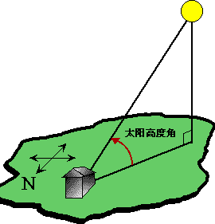

本应用在地理学中经常会碰到。实现了在线计算太阳高度角与太阳方位角的功能。

方位角是以目标物（图中小房子）的正北方向为起算方向。计算旋转方式为：以目标物为轴心，以目标物的北方向为起始点，按顺时针方向旋转计算，一周，方位角逐步增大至360°。方位角的取值范围在0-360度。
太阳高度角（英语为altitude of the sun），有时也被简称为太阳高度，是指某地的太阳光线与当地地平面的所交的最小线面角，这是以太阳视盘面的几何中心和理想地平线所夹的角度。在现在生活中，太阳高度解不会超过90度。
在上面计算中，时间的输入，使用 06:08 ，或 0608 ，来表示6点8分。